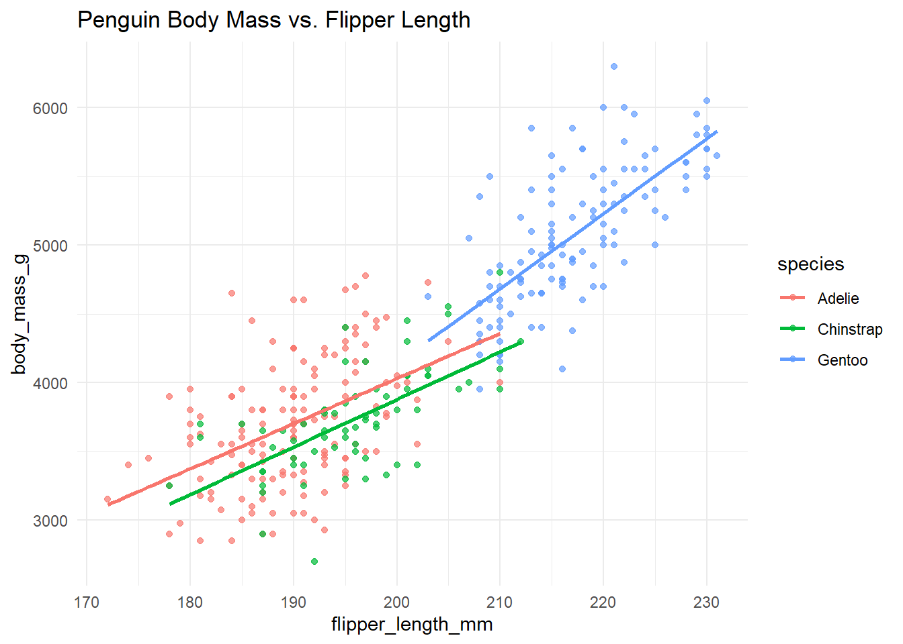

This is a short analysis demonstrating basic skills: plotting and fitting a simple model.
We use the built-in mpg dataset from
ggplot2.
options(repos = "https://cran.rstudio.com/")
install.packages("palmerpenguins")## package 'palmerpenguins' successfully unpacked and MD5 sums checked
##
## The downloaded binary packages are in
## C:\Users\jmerc\AppData\Local\Temp\Rtmp2pwJlB\downloaded_packageslibrary(palmerpenguins)
data <- penguins
str(data)## tibble [344 × 8] (S3: tbl_df/tbl/data.frame)
## $ species : Factor w/ 3 levels "Adelie","Chinstrap",..: 1 1 1 1 1 1 1 1 1 1 ...
## $ island : Factor w/ 3 levels "Biscoe","Dream",..: 3 3 3 3 3 3 3 3 3 3 ...
## $ bill_length_mm : num [1:344] 39.1 39.5 40.3 NA 36.7 39.3 38.9 39.2 34.1 42 ...
## $ bill_depth_mm : num [1:344] 18.7 17.4 18 NA 19.3 20.6 17.8 19.6 18.1 20.2 ...
## $ flipper_length_mm: int [1:344] 181 186 195 NA 193 190 181 195 193 190 ...
## $ body_mass_g : int [1:344] 3750 3800 3250 NA 3450 3650 3625 4675 3475 4250 ...
## $ sex : Factor w/ 2 levels "female","male": 2 1 1 NA 1 2 1 2 NA NA ...
## $ year : int [1:344] 2007 2007 2007 2007 2007 2007 2007 2007 2007 2007 ...summary(data)## species island bill_length_mm bill_depth_mm
## Adelie :152 Biscoe :168 Min. :32.10 Min. :13.10
## Chinstrap: 68 Dream :124 1st Qu.:39.23 1st Qu.:15.60
## Gentoo :124 Torgersen: 52 Median :44.45 Median :17.30
## Mean :43.92 Mean :17.15
## 3rd Qu.:48.50 3rd Qu.:18.70
## Max. :59.60 Max. :21.50
## NA's :2 NA's :2
## flipper_length_mm body_mass_g sex year
## Min. :172.0 Min. :2700 female:165 Min. :2007
## 1st Qu.:190.0 1st Qu.:3550 male :168 1st Qu.:2007
## Median :197.0 Median :4050 NA's : 11 Median :2008
## Mean :200.9 Mean :4202 Mean :2008
## 3rd Qu.:213.0 3rd Qu.:4750 3rd Qu.:2009
## Max. :231.0 Max. :6300 Max. :2009
## NA's :2 NA's :2library(ggplot2)p <- ggplot(data, aes(x = flipper_length_mm, y = body_mass_g, color = species)) +
geom_point(alpha = 0.7) +
geom_smooth(method = "lm", se = FALSE) +
theme_minimal() +
labs(title = "Penguin Body Mass vs. Flipper Length")
p
m <- lm(body_mass_g ~ flipper_length_mm + species, data = data)
summary(m)##
## Call:
## lm(formula = body_mass_g ~ flipper_length_mm + species, data = data)
##
## Residuals:
## Min 1Q Median 3Q Max
## -927.70 -254.82 -23.92 241.16 1191.68
##
## Coefficients:
## Estimate Std. Error t value Pr(>|t|)
## (Intercept) -4031.477 584.151 -6.901 2.55e-11 ***
## flipper_length_mm 40.705 3.071 13.255 < 2e-16 ***
## speciesChinstrap -206.510 57.731 -3.577 0.000398 ***
## speciesGentoo 266.810 95.264 2.801 0.005392 **
## ---
## Signif. codes: 0 '***' 0.001 '**' 0.01 '*' 0.05 '.' 0.1 ' ' 1
##
## Residual standard error: 375.5 on 338 degrees of freedom
## (2 observations deleted due to missingness)
## Multiple R-squared: 0.7826, Adjusted R-squared: 0.7807
## F-statistic: 405.7 on 3 and 338 DF, p-value: < 2.2e-16Write 3–5 sentences on what you learned and any caveats.
In this analysis, I explored the Palmer Penguins data set, focusing on the relationship between flipper length and body mass across different penguin species. The summary statistics showed three species with varying body sizes and flipper lengths. The scatter plot and linear model both illustrated a strong positive association between flipper length and body mass, and the model revealed high statistical significance for both flipper length and species as predictors. Specifically, Gentoo penguins tend to be heavier, while Chinstrap penguins are lighter, after controlling for flipper length. A key caveat is the presence of some missing data and the assumption of linearity in the model. Overall, this exercise highlighted how physical measurements can help distinguish species and predict biological traits in wildlife data sets.